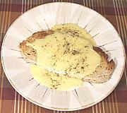

|
Welsh Rabbit / Golden BuckEuro / American | ||||
| Serves: Effort: Sched: DoAhead: |
2 ** 20 min No |
A superb breakfast (or late night snack) - but fools insist on calling it "Welsh Rarebit" (it's not really a rabbit, see?). This is a modern version because the Original Version isn't practical today. Golden Buck is a Welsh Rabbit with a poached egg on top. | |||
|
|
2 6 ---- 1 2 1 1/4 1/4 ---- tt |
sl oz --- T T t t t --- |
Bread, whole wheat Cheddar, aged (1) -- Sauce Butter Beer or Ale Worcestershire sauce Salt Mustard dry -------------- Pepper |
Make: - (20 min)
|